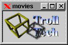

Incrementally loads an animation or image, signalling as it progresses. More...
#include <qmovie.h>
A QMovie provides a QPixmap as the framePixmap(), and connections can be made via connectResize() and connectUpdate() to receive notification of size and pixmap changes. All decoding is driven by the normal event processing mechanisms. The simplest way to display a QMovie, is to use a QLabel and QLabel::setMovie().
The movie begins playing as soon as the QMovie is created (actually, once control returns to the event loop). When the last frame in the movie has been played, it may loop back to the start if such looping is defined in the input source.
QMovie objects are explicitly shared. This means that a QMovie copied from another QMovie will be displaying the same frame at all times. If one shared movie pauses, all pause. To make independent movies, they must be constructed separately.
The set of data formats supported by QMovie is determined by the decoder factories which have been installed, and the format of the input is determined as the input is decoded.
In Qt 1.30, the decoder factory interface is not available for adding support for new formats. Only GIF support is installed. The GIF decoder supports interlaced images, transparency, looping, image-restore disposal, local color maps, and background colors. The Netscape looping extension is obeyed.
Archives of animated GIFs and tools for building them can be found at Yahoo!.
We are required to state: The Graphics Interchange Format(c) is the Copyright property of CompuServe Incorporated. GIF(sm) is a Service Mark property of CompuServe Incorporated.
Warning: Unisys has changed its position regarding GIF. If you are in a country where Unisys holds a patent on LZW compression and/or decompression, Unisys may require a license from you. These countries include Canada, Japan, the USA, France, Germany, Italy and the UK. There is more information on Unisys web site: Overview of Unisys' position. GIF support may be removed in a future version of Qt. We recommend using the PNG format, which is available in the Qt Image IO Extension package.

See also: QLabel::setMovie().
Examples: movies/main.cpp widgets/widgets.cpp
Creates a null QMovie. The only interesting thing to do to such a movie is to assign another movie to it.
See also: isNull().
Creates a QMovie which reads an image sequence from the given QDataSource. The source must be allocated dynamically, as it becomes owned by the QMovie, and will be destroyed when the movie is destroyed. The movie starts playing as soon as event processing continues.
The bufsize argument sets the maximum amount of data the movie will transfer from the data source per event loop. The lower this value, the better interleaved the movie playback will be with other event processing, but the slower the overall processing.
Constructs a movie that uses the same data as another movie. QMovies use explicit sharing, so operations on the copy will effect the same operations on the original.
This is an overloaded member function, provided for convenience. It differs from the above function only in what argument(s) it accepts.
Creates a QMovie which reads an image sequence from given data.
This is an overloaded member function, provided for convenience. It differs from the above function only in what argument(s) it accepts.
Creates a QMovie which reads an image sequence from the named file.
Destroys the QMovie. If this is the last reference to the data of the movie, that will also be destroyed.
Returns the background color of the movie set by setBackgroundColor().
Connects the given member, of type
void member(const QSize&)
such that it is signalled when the movie changes size.
Note that due to the explicit sharing of QMovie objects, these connections persist until they are explicitly disconnected with disconnectResize(), or until every shared copy of the movie is deleted.
Connects the given member, of type
void member(int)
such that it is signalled when the movie changes status. The status code are negative for errors and positive for information, and they are currently:
QMovie::SourceEmpty - signalled if the input cannot be read.
QMovie::UnrecognizedFormat - signalled if the input data is unrecognized.
QMovie::Paused - signalled when the movie is paused by a call to paused(),
or by after stepping pauses.
QMovie::EndOfFrame - signalled at end-of-frame, after any update and Paused signals.
QMovie::EndOfLoop - signalled at end-of-loop, after any update signals,
EndOfFrame, but before EndOfMovie.
QMovie::EndOfMovie - signalled when the movie completes and is not about
to loop.
More status messages may be added in the future, so a general test for error would test for negative.
Note that due to the explicit sharing of QMovie objects, these connections persist until they are explicitly disconnected with disconnectStatus(), or until every shared copy of the movie is deleted.
Examples: widgets/widgets.cpp
Connects the given member, of type
void member(const QRect&)
such that it is signalled when an area of the framePixmap() has changed since the previous frame.
Note that due to the explicit sharing of QMovie objects, these connections persist until they are explicitly disconnected with disconnectUpdate(), or until every shared copy of the movie is deleted.
Examples: widgets/widgets.cpp
Disconnects the given member, or all members if member is zero, previously connected by connectResize().
Disconnects the given member, or all members if member is zero, previously connected by connectStatus().
Disconnects the given member, or all members if member is zero, previously connected by connectUpdate().
Returns TRUE if the image is no longer playing - this happens when all loops of all frames is complete.
Returns the number of times EndOfFrame has been emitted since the start of the current loop of the movie. Thus, before any EndOfFrame has been emitted, the value will be 0, within slots processing the first signal, frameNumber() will be 1, and so on.
Returns the current frame of the movie. It is not generally useful to keep a copy of this pixmap. Better to keep a copy of the QMovie and get the framePixmap() only when needed for drawing.
Examples: widgets/widgets.cpp
Returns the area of the pixmap for which pixels have been generated.
Returns TRUE if the movie is null.
Makes this movie use the same data as another movie. QMovies use explicit sharing.
Pauses the progress of the animation.
See also: unpause().
Returns TRUE if the image is paused.
Rewinds the movie to the beginning. If the movie has not been paused, it begins playing again.
Returns TRUE if the image is not single-stepping, not paused, and not finished.
Set the background color of the pixmap. If the background color isValid(), the pixmap will never have a mask, as the background color will be used in transparent regions of the image.
See also: backgroundColor().
Sets the speed-up factor of the movie. This is a percentage of the speed dictated by the input data format. The default is 100 percent.
Examples: widgets/widgets.cpp
Returns the speed-up factor of the movie. The default is 100 percent.
See also: setSpeed().
Steps forward 1 frame, then pauses.
Steps forward, showing the given number of frames, then pauses.
Returns the number of steps remaining after a call to step(), 0 if paused, or a negative value if the movie is running normally or is finished.
Unpauses the progress of the animation.
See also: pause().
Search the documentation, FAQ, qt-interest archive and more (uses
www.troll.no):
This file is part of the Qt toolkit, copyright © 1995-99 Troll Tech, all rights reserved.
It was generated from the following files:
| Copyright © 1999 Troll Tech | Trademarks | Qt version 1.45
|